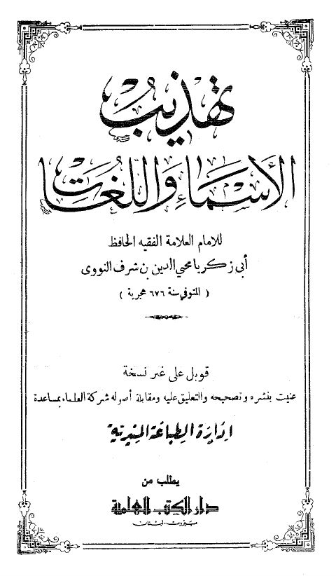

Downloads need an internet connection.
تهذيب الأسماء واللغات
Authors: يحيى بن شرف النووي
Publishers: دار الكتب العلمية إدارة الطباعة المنيرية
**▫️ العنوان: تهذيب الأسماء واللغات** ▪️ المؤلف: #يحيى_بن_شرف_النووي ▫️ الناشر: #إدارة_الطباعة_المنيرية • #دار_الكتب_العلمية ▪️ بلد النشر: بيروت، #لبنان ▫️ الطبعة: 1 ▪️ عدد الأجزاء: 4 ▫️ الصفحات: 1131 ▪️ نوع الوعاء: #كتاب ▫️ التصنيف الرئيسي: #اللغة_العربية ▪️ التصنيف الفرعي: #لغة ۪